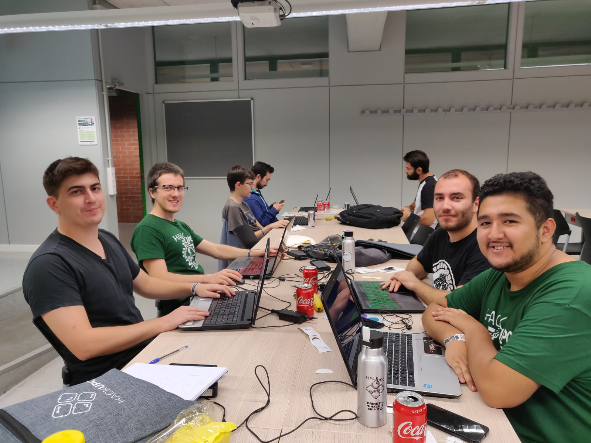

ABOUT PAGE
The main goal of this page is to entertain all the passengers on the terminal waiting to board a plane
The vueling game is based in the saimon says game
Instructions
The player has to repeat the color code provided without errors
Each time the sequence is completed correctly a new color is added to the sequence
About the developers

From left to right and from botton to top
José Ignacio Bustamante Vargas, Miquel Bars Barba, Jairo Villarroel Rodriguez, Marc Aparicio Arbusa
This page was made in October 2019 in the HackUPC event